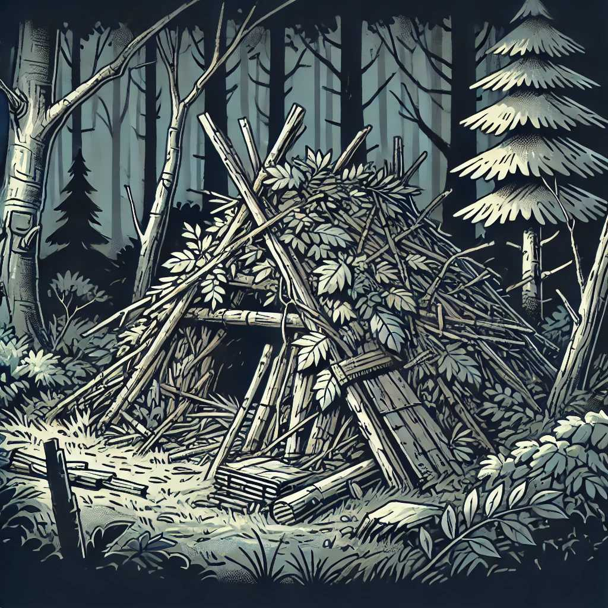

Shelter Building: How to Create a Safe Haven in the Wilderness
Building a shelter is one of the most critical skills in a survival situation. A well-constructed shelter provides protection from the elements, warmth, and a safe place to rest. This guide will teach you how to create a safe haven in the wilderness.
1. Choosing the Right Location
The first step in building a shelter is selecting an appropriate location.
Factors to Consider:
- Terrain: Choose a flat, dry area.
- Resources: Ensure availability of building materials like branches, leaves, and rocks.
- Safety: Avoid areas prone to flooding, avalanches, or falling branches.
- Visibility: For rescue situations, choose a location visible from the air or a distance.
2. Types of Shelters
Different environments and situations require different types of shelters. Here are some common ones:
2.1 Lean-To Shelter
A simple and effective shelter that provides protection from wind and rain.
How to Build:
- Find a Support: Use a sturdy branch or fallen tree.
- Lay Branches: Lean branches against the support at a 45-degree angle.
- Cover: Use leaves, pine needles, or a tarp to cover the branches.
2.2 A-Frame Shelter
Provides better protection and is more stable in windy conditions.
How to Build:
- Create a Ridgepole: Place a long branch between two trees or supports.
- Add Rafters: Lean shorter branches against the ridgepole on both sides.
- Cover: Use foliage, debris, or a tarp to insulate and protect the structure.
2.3 Debris Hut
Ideal for cold weather, providing excellent insulation.
How to Build:
- Frame: Create a sturdy frame with a ridgepole and support branches.
- Layer: Pile leaves, grass, and other debris over the frame.
- Entrance: Leave a small entrance and use additional debris to cover once inside.
2.4 Tarp Shelter
Quick and versatile, using a tarp or poncho.
How to Build:
- Secure the Tarp: Tie the tarp to trees or stakes.
- Shape: Arrange the tarp into an A-frame, lean-to, or other shapes as needed.
- Anchor: Use rocks or additional stakes to secure the tarp to the ground.
3. Insulation and Bedding
Keeping warm and comfortable is crucial for survival.
Tips for Insulation:
- Ground Insulation: Use leaves, pine needles, or a foam pad to insulate from the cold ground.
- Wall Insulation: Add layers of foliage, moss, or other materials to thicken the walls.
- Bedding: Create a soft bed using leaves, grass, or a sleeping bag if available.
4. Waterproofing
Protecting your shelter from rain and snow is essential.
Waterproofing Techniques:
- Layering: Use multiple layers of branches and foliage.
- Tarp: Incorporate a tarp or poncho as an outer layer.
- Drainage: Dig a small trench around the shelter to direct water away.
5. Ventilation and Safety
Proper ventilation prevents condensation and ensures safety.
Ventilation Tips:
- Leave Gaps: Ensure small gaps for airflow.
- Avoid Fires Inside: If using fire for warmth, place it outside the entrance and reflect heat inward.
6. Fire and Heat
Using fire for warmth and cooking can enhance your shelter.
Fire Tips:
- Fire Reflector: Build a wall of rocks or logs behind the fire to reflect heat into the shelter.
- Fire Pit: Create a safe fire pit away from flammable materials.
- Safety: Never leave a fire unattended and ensure it's fully extinguished before sleeping.
Conclusion
Building a shelter in the wilderness is a vital survival skill that requires knowledge and practice. By choosing the right location, selecting the appropriate type of shelter, and incorporating insulation, waterproofing, and ventilation, you can create a safe and comfortable haven. Regularly practice these techniques to be prepared for any survival situation.